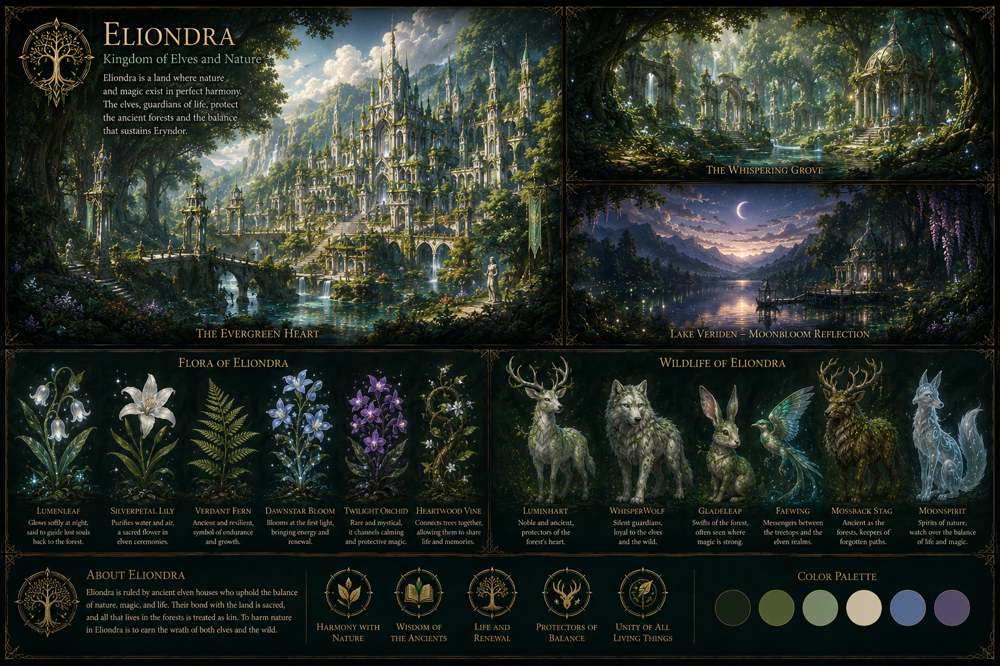
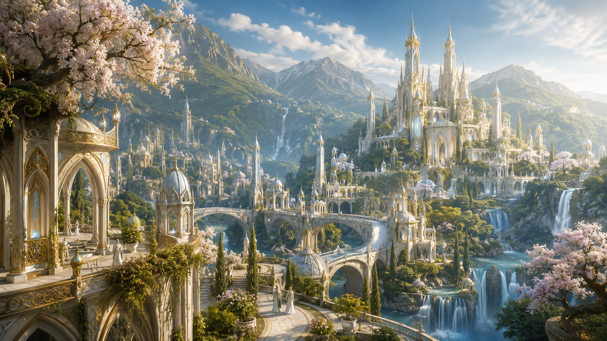
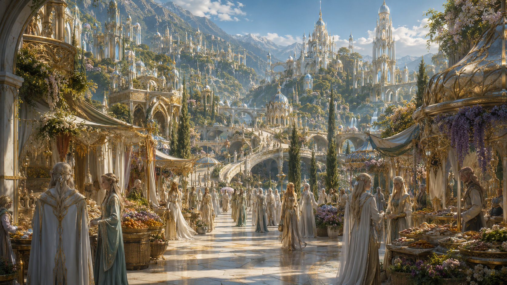
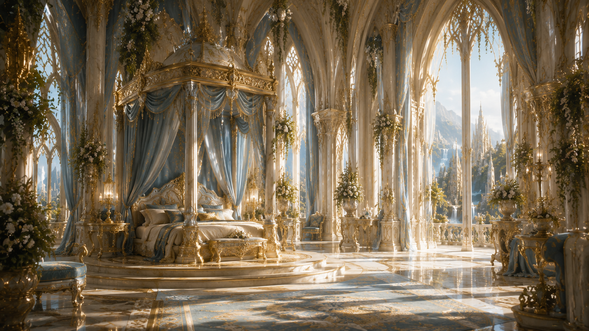
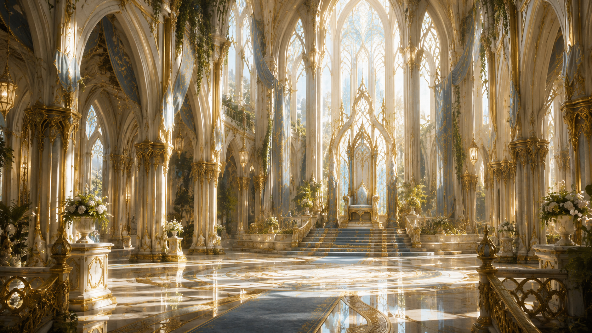
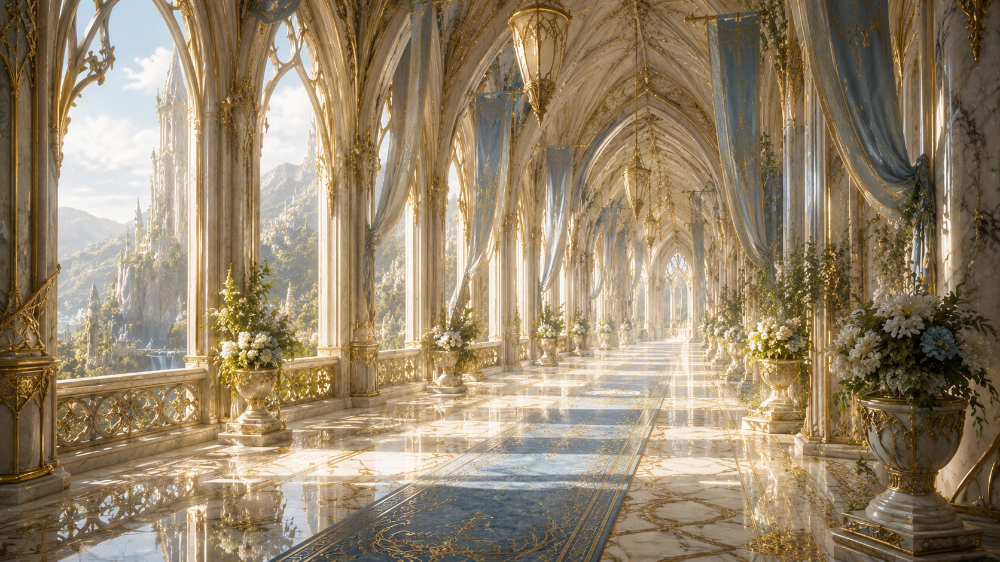
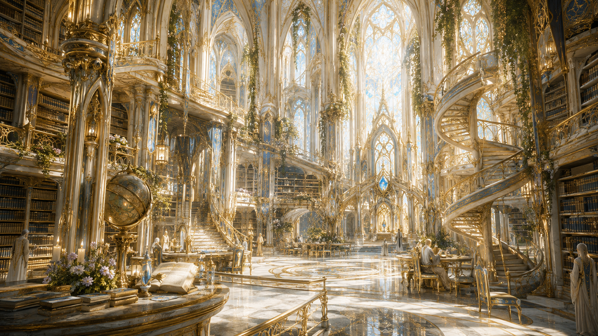
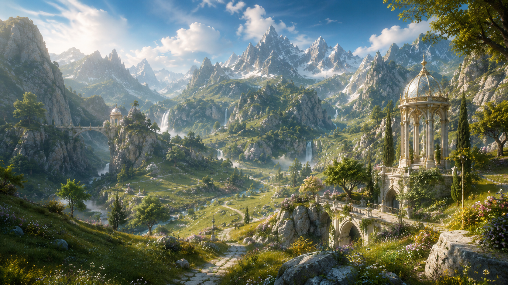
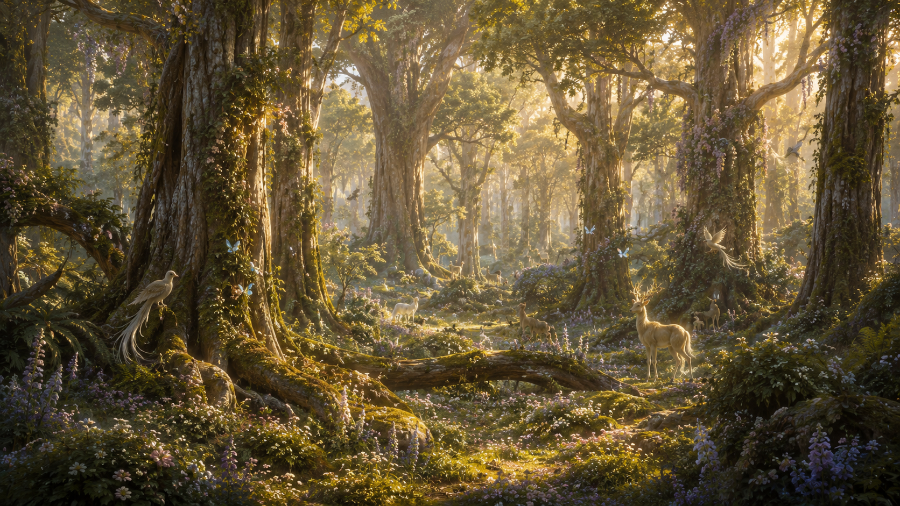
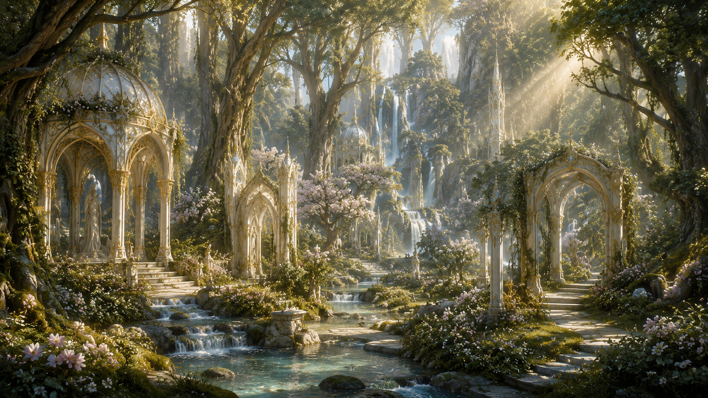

A mystical kingdom of emerald forests, ancient spirits and sacred trees, where nature and magic exist in perfect harmony.
Discover EliondraEliondra is a kingdom where civilization was built around nature rather than over it. Ancient forests cover
much of the land, and enormous sacred trees rise beside rivers, green mountains and settlements hidden beneath
the canopy.
Its cities follow the same philosophy. Elven structures are surrounded by vegetation, while palaces, markets
and homes incorporate wood, stone and living plants into their design. Even Elaris, the capital, feels more
like an extension of the forest than a city separated from it.
The Council of Elders governs Eliondra, representing a society formed by Elves, Forest Spirits and other
magical beings. Nature and spirit magic influence everyday life, from healing and agriculture to the protection
of sacred places. Tradition, knowledge and respect for the forest are deeply rooted in its culture.
The humid climate allows the land to remain incredibly fertile. Giant trees, flowering vines, medicinal herbs
and luminous plants cover the forest floor, while enchanted deer, forest spirits, colorful birds and other
magical animals move freely through the territory. For the people of Eliondra, these creatures are not simply
wildlife, but part of the same living world they belong to

Elaris
Council of Elders
Elves, Forest Spirits and Magical Beings
Nature and Spirit Magic
Temperate and Humid
Emerald Guardians








